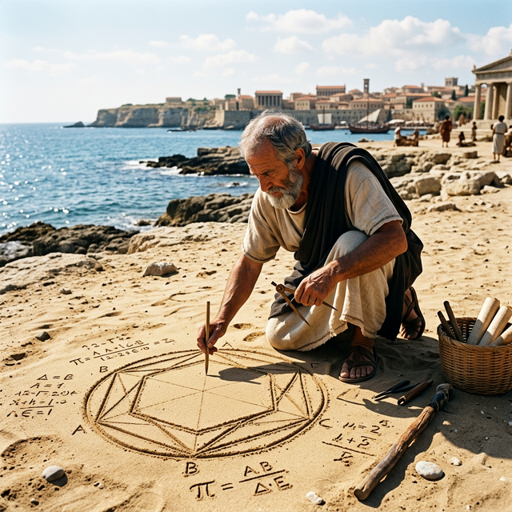
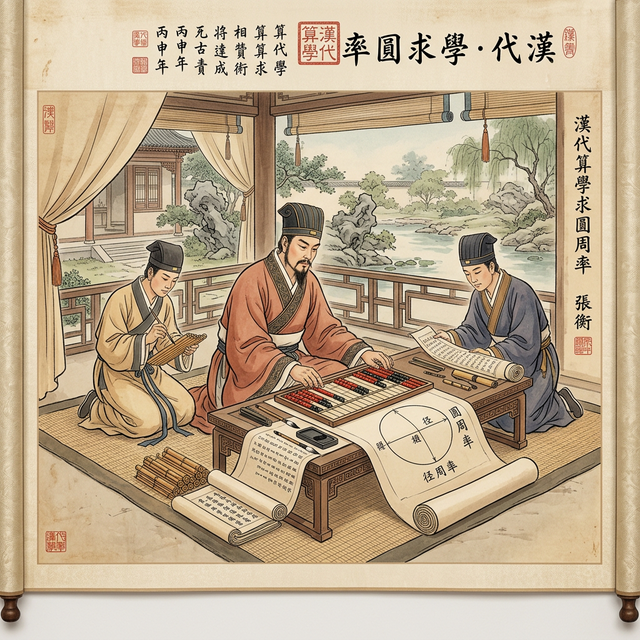
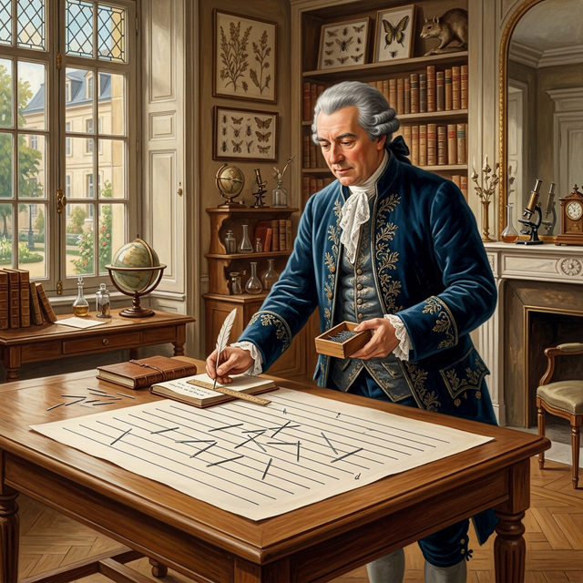

Quiz
Buffon
Ancient
Stream
Pi in the Sky
Exploring the Infinite Accuracy of Space Exploration
× CLOSE
Earth
15 Decimal Places
3.141592653589793
2000 BCE
Babylon
1650 BCE
Egypt

250 BCE
Archimedes
Activity: Ancient

200 CE
Ancient China
263 CE
Liu Hui
480 CE
Zu Chongzhi
1400 CE
Madhava
1593
Francois Viète
1706
William Jones
Activity: Quiz
1737
Leonhard Euler

1777
Buffon
Activity: Buffon
1949
ENIAC
1989
Japan Supercomputer
2019
Google Cloud
2022+
Modern Supercomputing
Activity: Stream